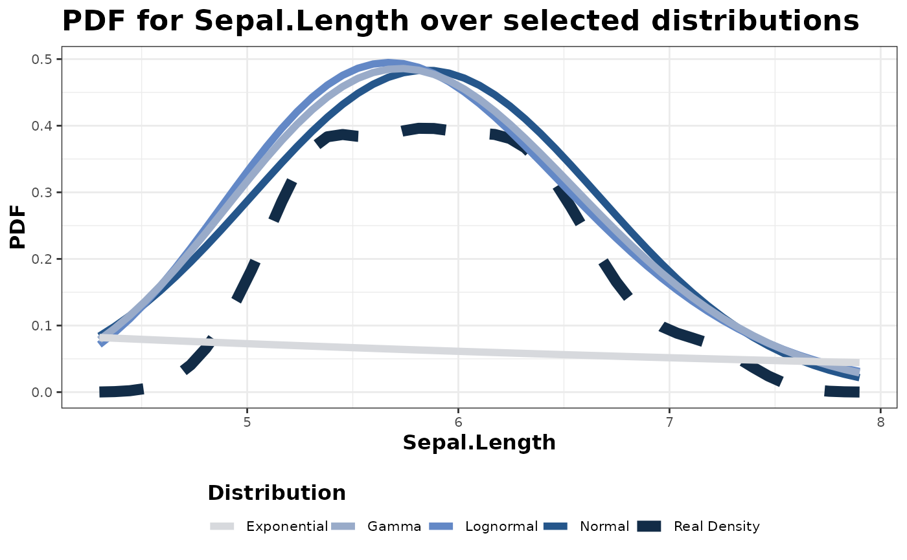
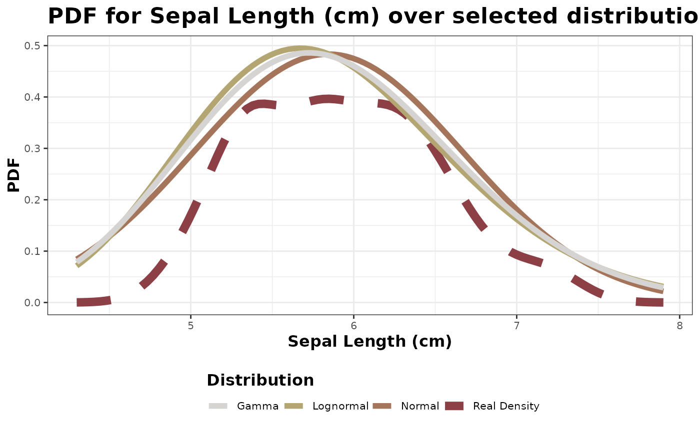

This function extends 'multiPDF_cont' and gets the probability density functions (PDFs) for selected distributions against continuous variables. Possible distributions include any combination of "normal", "lognormal", "gamma", "exponential", and "all" (which just uses all of the prior distributions). It then plots this using 'ggplot2' and a 'scico' palette, using var_name for the plot labeling, if specified. If not specified, it will use var instead.
Usage
multipdf_plot(
var,
seq_length = 50,
distributions = "all",
palette = "oslo",
var_name = NULL
)Arguments
- var
The variable to for which to plot PDFs
- seq_length
The number of points over which to fit x
- distributions
The distributions to fit x against
- palette
The color palette to use on the graph
- var_name
The variable name to use for x. If no name is provided, the function will grab the column name provided in x
Value
A plot showing the PDF of the selected variable against the selected distributions over the selected sequence length
Examples
multipdf_plot(iris$Sepal.Length)

multipdf_plot(iris$Sepal.Length,
seq_length = 100,
distributions = c("normal", "lognormal", "gamma"),
palette = "bilbao",
var_name = "Sepal Length (cm)"
)
